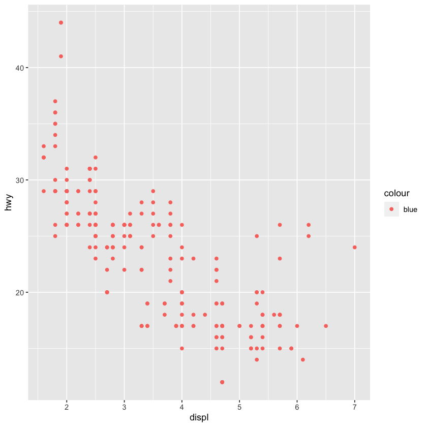
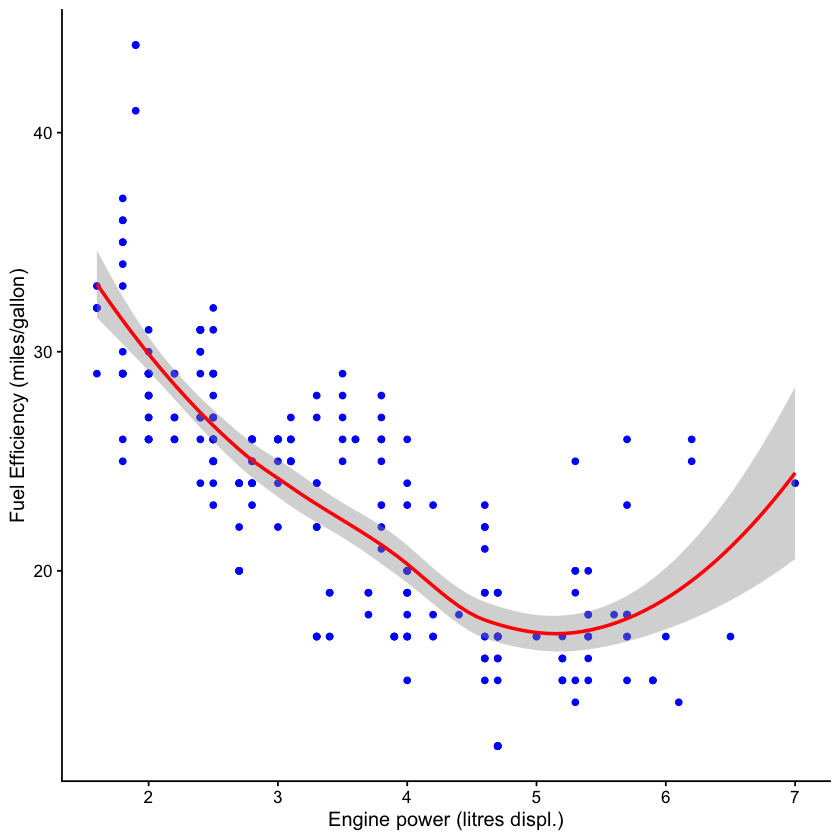
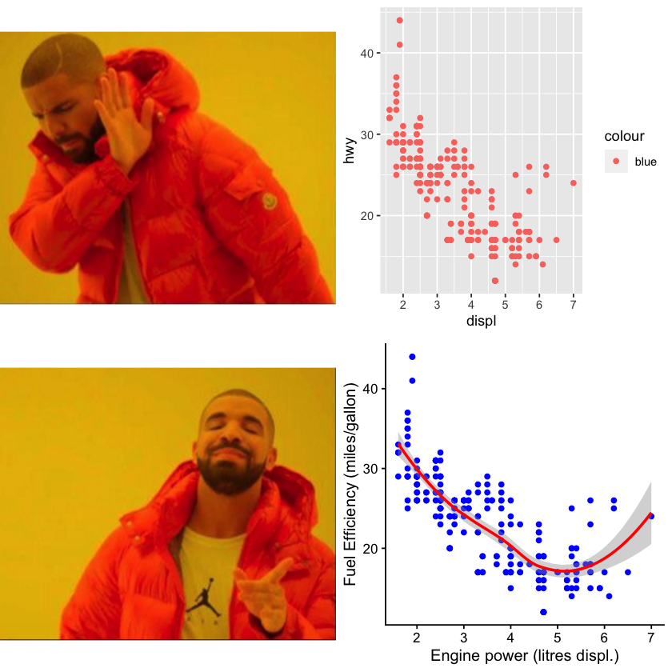

library(ggplot2)
library(cowplot)
library(magick)Linking to ImageMagick 6.9.12.3
Enabled features: cairo, fontconfig, freetype, heic, lcms, pango, raw, rsvg, webp
Disabled features: fftw, ghostscript, x11
Project Jupyter develops open-source software, open standards, and services for interactive computing across multiple programming languages.
Jupyter supports execution environments (called “kernels”) in several dozen languages, including Julia, R, Haskell, Ruby, and Python.

Quarto is an open-source scientific and technical publishing system. It enables you to weave together content and executable code into a finished document.
Quarto can use Jupyter notebooks to create dynamic content or reproducible documents.
When you render a Jupyter notebook with Quarto, the contents of the notebook (code, markdown, and outputs) are converted to plain markdown and then processed by Pandoc, which creates the finished format.

We need magick to read the images, ggplot2 for plotting and and cowplot for arranging the grid of plots and images.
library(ggplot2)
library(cowplot)
library(magick)Linking to ImageMagick 6.9.12.3
Enabled features: cairo, fontconfig, freetype, heic, lcms, pango, raw, rsvg, webp
Disabled features: fftw, ghostscript, x11
We use the functions from package here to establish our project root, and then use the relative paths to the images
here::i_am("presentation/showcase-your-research.qmd")
yes_img <- here::here("images/yes.png")
no_img <- here::here("images/no.png")here() starts at /Users/z3529065/proyectos/codeRs/showcase-your-research
We use functions from cowplot to set up drawing layers in top of blank ggplot2 canvas. This requires the magick package to read and manipulate the images internally.
yes_plot <- ggdraw() + draw_image(yes_img, scale = 1)
no_plot <- ggdraw() + draw_image(no_img, scale = 1)Sometimes we do silly mistakes when we are learning to use a package. This is one example:
(bad_plot <-
ggplot(mpg, aes(x = displ, y = hwy, colour = "blue")) +
geom_point())
Adding layers of ggplot2 functions allow us to customise plots and make them ready for publication.
(good_plot <-
ggplot(mpg, aes(x = displ, y = hwy)) +
geom_point(colour = "blue") +
geom_smooth(colour = "red") +
theme_half_open(12) +
labs(x = "Engine power (litres displ.)",
y = "Fuel Efficiency (miles/gallon)"))`geom_smooth()` using method = 'loess' and formula = 'y ~ x'
plot_grid(no_plot, bad_plot,
yes_plot, good_plot) `geom_smooth()` using method = 'loess' and formula = 'y ~ x'
ggplot2Open a terminal in the same directory as this file and then type:
quarto render Example.ipynb --to html for html outputquarto render Example.ipynb --to docx for docx output